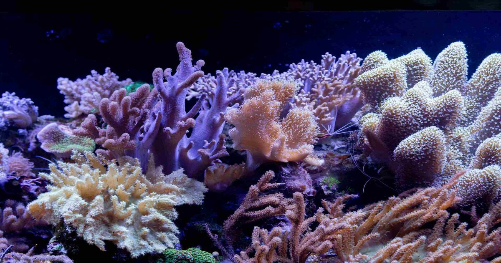

Умирающие кораллы научились спасаться простым прикосновением к здоровым собратьям
Американские биологи обнаружили необычный механизм восстановления коралловых рифов: потерявшие цвет кораллы, находящиеся на грани гибели, способны полностью возвращаться к жизни всего за семь недель при простом прикосновении к здоровым собратьям.
Главным условием для спасения оказалась генетическая идентичность соприкасающихся фрагментов.